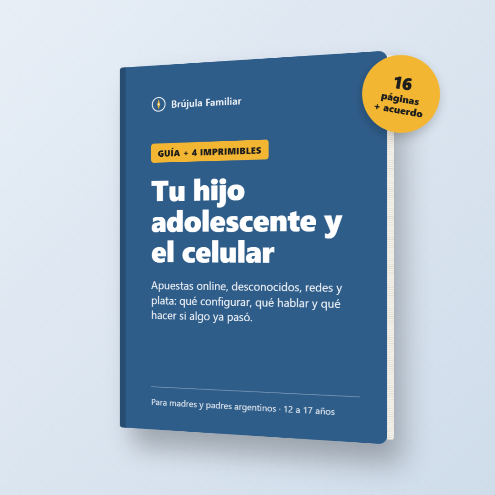
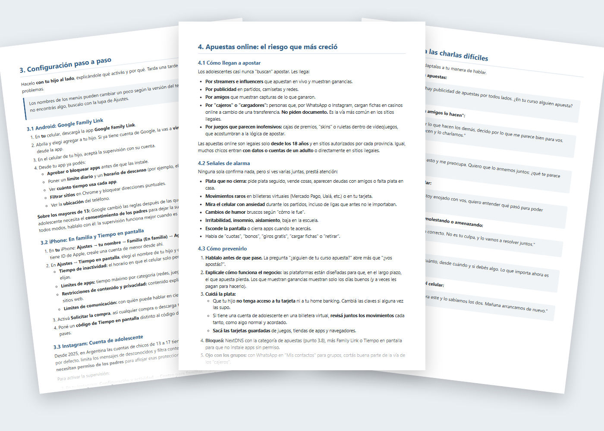
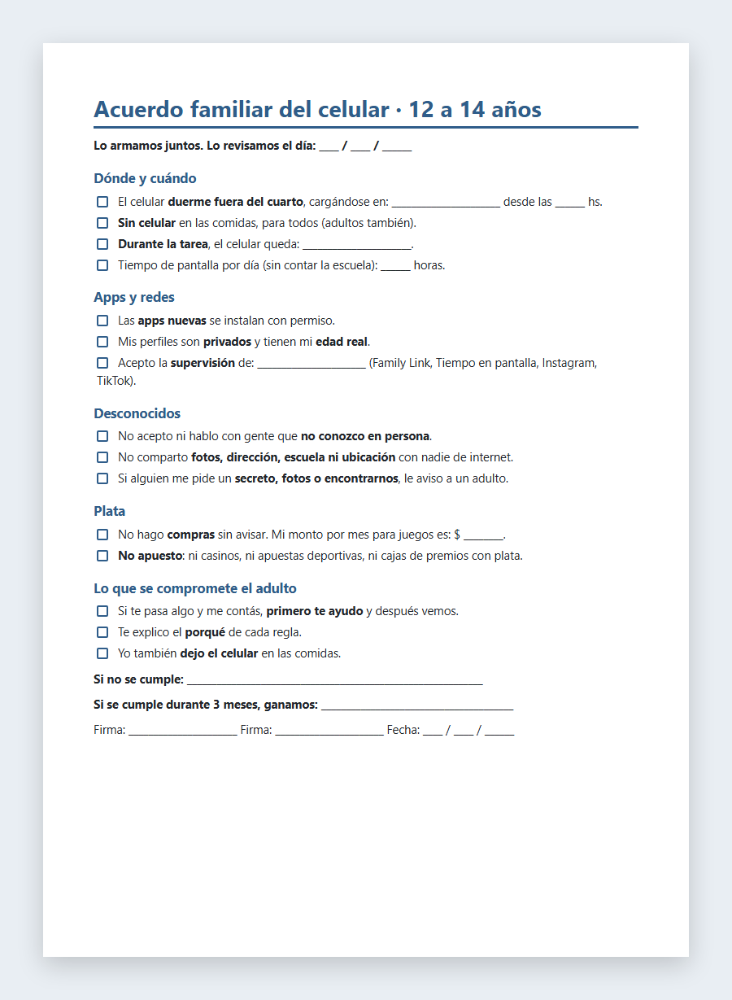
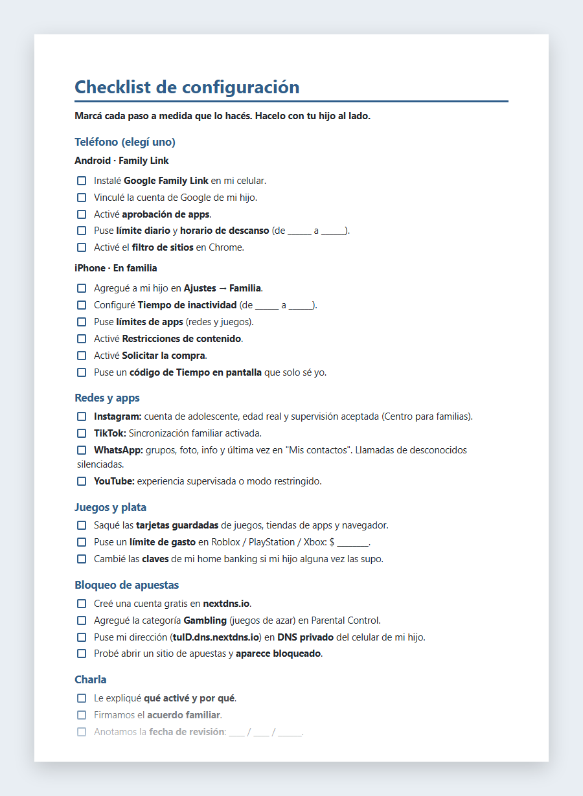

Una guía práctica para madres y padres argentinos de chicos de 12 a 17 años. Apuestas online, desconocidos, redes y plata, explicado paso a paso y sin alarmismo.

Quiero la guía · US$ 10Pago único · Acceso inmediato · Garantía de 7 días
La encuesta Kids Online Argentina 2025 de UNICEF y UNESCO, con casi 6.000 chicos de todo el país, encontró esto:
Fuente: UNICEF y UNESCO, Kids Online Argentina 2025.
Y la mayoría de esas apuestas son en sitios ilegales, que no piden documento. Muchas llegan por "cajeros" que cargan fichas por WhatsApp a cambio de una transferencia.
A los 14 el problema ya no es "cuántas horas". Es con quién habla, qué ve y qué hace con la plata. Y para eso hacen falta otras herramientas.

16 páginas en PDF, para leer en el celular o imprimir.


Te llega todo por mail apenas se acredita el pago
US$ 10
Con tarjeta argentina son unos $18.500 en pesos. Pago único.
Sí. La mayor parte de la guía es para chicos que ya lo usan: configuración, charlas, el acuerdo y un plan de 21 días para cuando ya se fue de las manos.
No. Cada configuración está explicada paso a paso, menú por menú, para Android y para iPhone.
No. A esta edad el control total no funciona: lo esquivan. La guía propone supervisión según la edad, acuerdos y, sobre todo, que tu hijo te cuente cuando algo pasa.
Hay un capítulo con los pasos para ese momento: cómo hablarlo, qué hacer con las deudas, cómo cortar el acceso y dónde pedir ayuda gratis.
No. Es una guía educativa y práctica. Si hay señales de riesgo serias, te dice cuándo y dónde buscar ayuda profesional.
Apenas se acredita el pago te llega un mail de Hotmart con el acceso al PDF y a los imprimibles.
Garantía de 7 días · Pago seguro con Hotmart